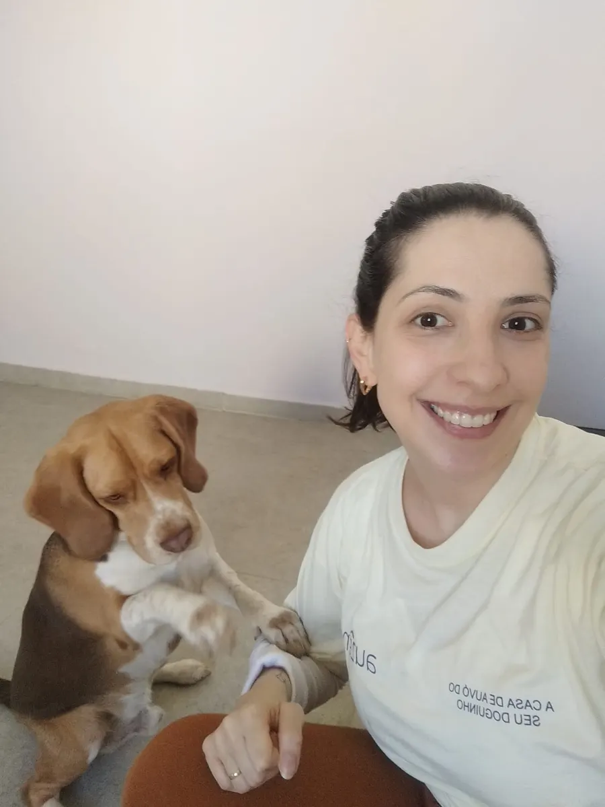

Consultas
Consultas veterinárias para cães e gatos, realizadas no local pela médica-veterinária responsável.
Clínica veterinária · Vila Carvalho, Sorocaba
Atendimento veterinário no local, na Vila Carvalho: consultas, orientações de saúde, emissão de receitas e pedidos de exames, com a médica-veterinária responsável pela Auzên.
Aos sábados, a clínica atende sob agendamento.

Cães e gatos
atendidos no local
Sábados
sob agendamento
CRMV-SP 45788
responsável técnica
Atendimento veterinário
O atendimento é feito no próprio espaço da Auzên, na R. Dr. Fernando Costa, 432.
Consultas veterinárias para cães e gatos, realizadas no local pela médica-veterinária responsável.
Orientações sobre a saúde do seu pet, para você cuidar dele com mais segurança no dia a dia.
Emissão de receitas quando a consulta indicar a necessidade de tratamento.
Emissão de pedidos de exames quando a avaliação veterinária indicar que eles são necessários.
Atendemos aos sábados, sob agendamento. Chame no WhatsApp para combinar o horário.
Agendar no sábadoDra. Ana Lúcia Bonilha Scomparim Balera
Médica-veterinária
Quem atende
A responsável técnica da clínica é a Dra. Ana Lúcia Bonilha Scomparim Balera, médica-veterinária registrada no CRMV-SP sob o nº 45788.
Ela também é a fundadora da Auzên e acompanha de perto a rotina do espaço. Na clínica, atende cães e gatos com consultas, orientações de saúde, emissão de receitas e pedidos de exames.
Ana Lúcia Bonilha Scomparim Balera · CRMV-SP 45788
Perguntas frequentes
Se a sua pergunta não estiver aqui, mande uma mensagem pelo WhatsApp.
Fazer uma perguntaSim. A clínica veterinária da Auzên atende cães e gatos.
Consultas e orientações de saúde, emissão de receitas e pedidos de exames, sempre no próprio espaço da Auzên.
Sim, aos sábados o atendimento é feito sob agendamento. Combine o horário pelo WhatsApp (15) 99787-8345.
Na R. Dr. Fernando Costa, 432, Vila Carvalho, em Sorocaba/SP — no mesmo endereço da creche e hotel da Auzên.
A responsável técnica é a Dra. Ana Lúcia Bonilha Scomparim Balera, médica-veterinária, CRMV-SP 45788.
Pelo WhatsApp (15) 99787-8345. Conte um pouco sobre o seu cão ou gato e combinamos o atendimento.
Agende um atendimento
Fale com a gente pelo WhatsApp para agendar uma consulta na Vila Carvalho, em Sorocaba.